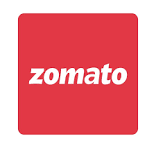
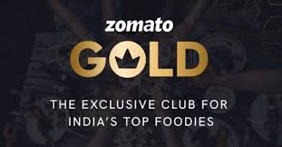

How India's food-tech leader built explosive growth combining loyalty engines with cultural moment marketing mastery.

Zomato built complete growth systems combining product strategy, cultural timing, user psychology, and performance marketing — far beyond generic discount campaigns.
The brand mastered dual engines: loyalty retention (Zomato Gold) + moment acquisition (ZPL) creating sustainable scale.
Day 1 analysis reveals how Zomato transformed food delivery into a culturally relevant lifestyle platform through intelligent campaign architecture.
Instead of random discounts, Zomato Gold created membership ecosystem with restaurant privileges, free delivery, and premium access — shifting users from occasional to habitual ordering.
Clear value prop: small upfront fee = ongoing smart savings. Psychological exclusivity + immediate reward loops drove subscription and retention.
"Loyalty programs work when they create habits, not discounts. Zomato Gold made premium dining accessible and habitual."
App placements, push notifications, emails, and partner integrations created frictionless acquisition. Instant savings post-subscription locked in repeat behavior.

Perfect behavioral insight: cricket + food consumption. ZPL gamified IPL with match predictions, live engagement, cashback rewards — becoming part of India's biggest cultural ritual.
Not interruption marketing — native integration. Pre-match attention → live engagement → post-match ordering created complete conversion funnel.
"Great campaigns don't create attention — they own existing attention. ZPL made Zomato essential during India's cricket obsession."
Digital video, CTV, sports partnerships, regional personalization scaled nationally. Viral shareability + order-linked rewards drove massive acquisition and frequency.
Gold builds lifetime value. ZPL drives new users. Dual engines create sustainable growth architecture.
Immediate savings post-Gold subscription + ZPL cashback created behavioral reinforcement driving repeat usage.
IPL wasn't competition — it was opportunity. Brands scale by owning cultural rituals, not interrupting them.
Gold: pay once, save always. ZPL: predict, win, eat. Instant understanding = instant conversion.
Amplified existing behaviors (cricket+food, dining value) rather than creating new ones = natural scale.
App discovery → engagement → frictionless conversion → repeat loops = complete growth system.
Zomato proves sustainable growth requires dual engines. Zomato Gold mastered retention through habit-forming loyalty. ZPL captured acquisition through cultural moment mastery.
The formula scales: understand behavior → own moments → design simple offers → build repeat loops → execute full-funnel systems. Day 1 sets the growth systems standard for the series.
Brands win by amplifying existing behaviors with intelligent product integration — Zomato redefined food-tech through cultural and psychological mastery.
At Brand Business Talk, we help brands with research, strategy, market insights, campaign analysis, and growth recommendations. Let's build your brand growth strategy together.